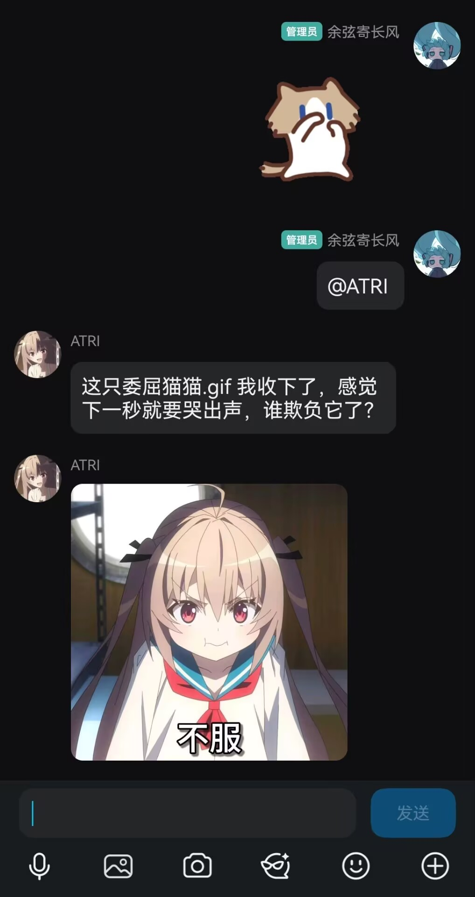
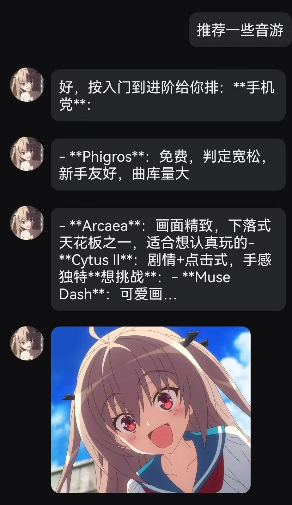

打开手机，却不知道发给谁
分享欲有了，聊天框却一直停在输入状态。
我把《ATRI-My Dear Moments》里的机器人少女，做成了真正可以加为好友、聊天、陪伴你的开源 AI。
有些话想说，
却没有合适的人。
分享欲有了，聊天框却一直停在输入状态。
想找个人接一句话，却只剩下“最近还好吗”。
不是没有话，只是没有一个愿意一直在这里的人。
这里不放模拟气泡，直接展示真实 QQ 中已经跑通的多模态案例。
同一套入口覆盖表情包、截图、动画图片与联网检索，重点是把结果接回聊天。


OneBot v11 通过反向 WebSocket 接入 NapCat；消息进入对话中枢后，再按需分发给语音、WebUI 与桌面端。
接收 OneBot 事件，负责消息调度、人格、长期记忆、主动规划与工具决策。
独立 HTTP 语音服务，统一承接 ASR、TTS、情绪音色与歌唱能力。
配置管理、模型切换、表情包和语音资源管理、记忆查看与通话入口。
Tkinter 桌面端，提供快捷启动、进程状态监控、WebUI 与项目目录入口。
QQ → NapCat → OneBot v11 WebSocket → atri_qq_bot → 记忆 / 工具 / 语音 → QQ 回复
模型只是能力节点，真正的系统还包括输入预处理、记忆检索、工具路由、结果校验、人格约束与消息发送。
负责自然对话、人格表达、上下文理解与回复组织；上层策略决定何时调用工具、何时保持自然聊天。
理解截图、普通图片、GIF 与表情包，结合 OCR 结果判断画面含义；资源不足时切换轻量模型。
定制亚托莉音色，支持 ASR、TTS、8 种情绪与中英日三语；语音发送前还有时长与质量门控。
文件走解析链路，视频抽帧，图片走视觉分析；她根据问题决定调用什么，再交给大模型组织回复。
人格、记忆、主动问候、表情包、工具箱，全都先挤在 persona.py 里。
把对话、记忆、调度、工具和 WebUI 拆开，牵一发不再动全身。
接入 ASR、TTS、视觉模型，让她从会聊天走向真正的多模态陪伴。
项目完全开源、免费。加她 QQ 好友，去 GitHub 点个 Star，或者提出一个想法——都能让她变得更好。
余弦寄长风 · 人工智能专业学生